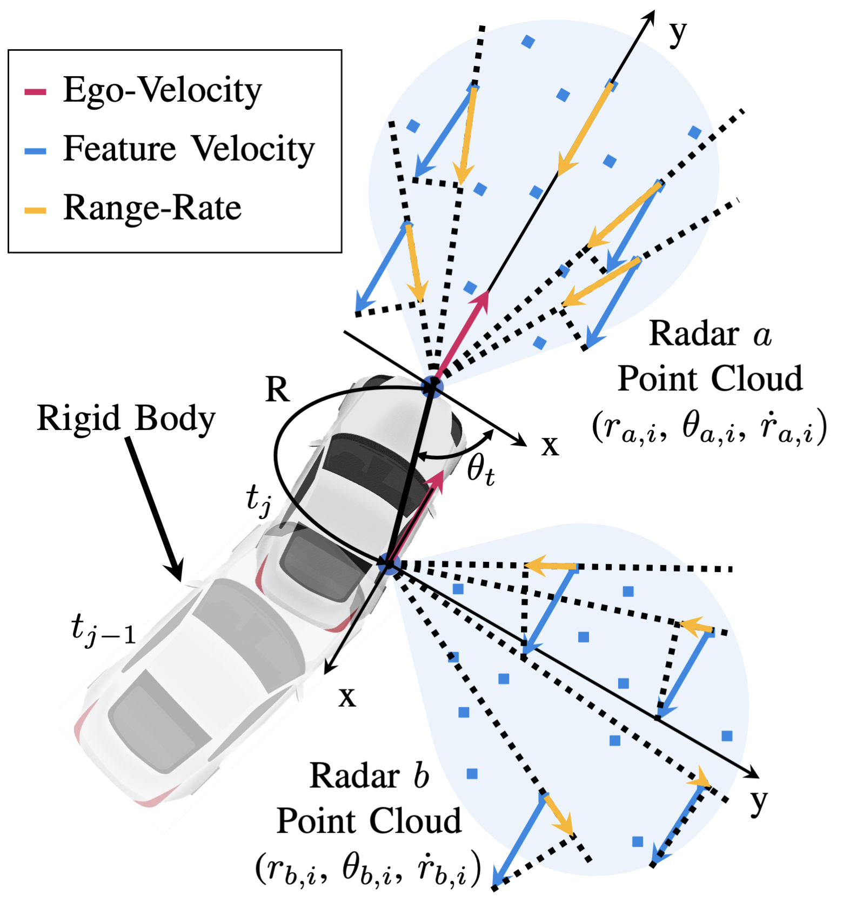

Publications |
|
|
Evolution of Humanoid Locomotion Control
Y. Gu, G. Shi, F. Shi, I. Chang, Y. Wang, Q. Cheng, Z. Olkin, I. Lopez-Sanchez, Y. Feng,
J. Zhang, A. D. Ames, H. Su, and K. Sreenath
Science Robotics (Under Review), 2025
A comprehensive review and perspective of humanoid locomotion control methods, spanning classical to learning-based approaches to emerging trends.
|
|
|
A Certifiably Correct Algorithm for Generalized Robot-World and Hand-Eye Calibration
E. Wise, P. Kaveti, Q. Cheng, W. Wang, H. Singh, J. Kelly, D. M. Rosen, and M. Giamou
IJRR (Under Review), 2025
Certifiably correct calibration achieving globally optimal robot-world and hand-eye alignment under general conditions.
|
|
|
Master's Thesis: Design and Development of IRIS: An Intelligent Robotic Imaging System — A Low-Cost, 3D-Printed Cinema Robot Arm for Dynamic Shot Automation
Q. Cheng, M. Mackay, A. Bereyhi
Master of Engineering Thesis, University of Toronto, 2025
Low-cost, fully 3D-printed 6-DoF cinema robot arm (IRIS) with FOC actuators, differential wrist, and a vision-conditioned imitation-learning stack in ROS.
|
|
|
VibraForge: A Scalable Prototyping Toolkit For Creating Spatialized Vibrotactile Feedback Systems
B. Huang, S. Ren, Y. Luo, Q. Cheng, H. Cai, Y. Sang, M. Sousa, P. H. Dietz, and D. Wigdor
CHI, 2025
An open-source toolkit enabling rapid design and deployment of large-scale vibrotactile feedback systems for spatialized haptic interactions.
|
|
|
AeroHaptix: A Wearable Vibrotactile Feedback System for Enhancing Collision Avoidance in UAV Teleoperation
B. Huang, Z. Wang, Q. Cheng, S. Ren, H. Cai, A. Alvarez Valdivia, K. Mahadevan, and D. Wigdor
IEEE RA-L, 2024
Introduces a wearable vibrotactile system integrated with UAV teleoperation, leveraging control barrier functions for safe human-drone interaction.
|
|

|
Extrinsic Calibration of 2D Millimetre-Wavelength Radar Pairs Using Ego-Velocity Estimates
Q. Cheng, E. Wise, and J. Kelly
IEEE AIM, 2023
Proposes a calibration framework for radar-radar pairs leveraging ego-motion cues without overlapping views for improved pose estimation accuracy.
|
|
|
Spatiotemporal Calibration of 3D Millimetre-Wavelength Radar-Camera Pairs
E. Wise, Q. Cheng, and J. Kelly
IEEE TRO, 2022
Introduces continuous-time B-spline calibration for radar-camera systems, outperforming state-of-the-art methods in robustness and precision.
|
|
|
Weakly Supervised Semantic and Attentive Data Mixing Augmentation for Fine-Grained Visual Categorization
M. He, Q. Cheng, and G. Qi
IEEE Access, 2022
Proposes a weakly supervised attention-guided data augmentation strategy for fine-grained image classification tasks.
|
|
|
Generative Design for Self-Balancing Unicycle Robot in Additive Manufacturing
J. Chen, Q. Cheng, and M. Han
SPIE ACAIB, 2022
Applies generative design and additive manufacturing techniques to develop a self-balancing unicycle robot prototype.
|